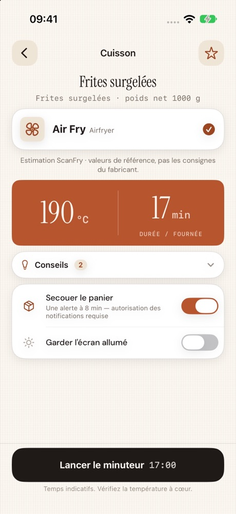
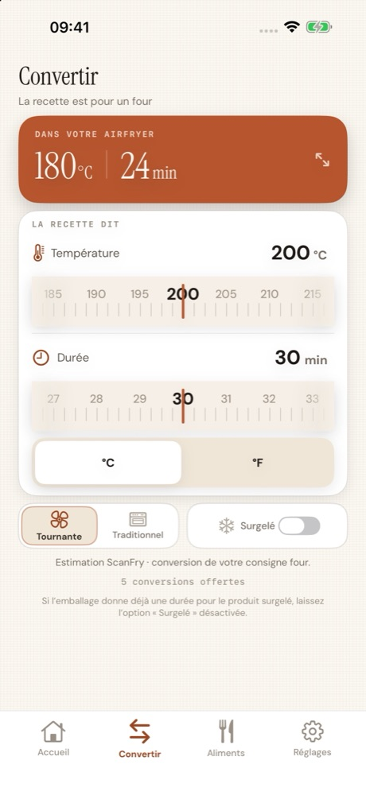

La cuisson airfryer simplifiée
Scannez.
Cuisez juste.
Scannez l’emballage ou convertissez une recette au four : ScanFry vous donne la température et la durée pour votre airfryer.
Bientôt sur l’App StoreSans compte, sans publicité, sans suivi. Les photos restent sur votre iPhone.
Scanner
Visez l’étiquette.
C’est prêt.
Code-barres ou photo : ScanFry reconnaît l’aliment et son poids, directement sur votre iPhone.
- Scannez le code-barres ou l’étiquette.
- Vérifiez l’aliment et le poids.
- Lancez le minuteur.

Convertir
Du four
à l’airfryer.
Une recette ou un emballage ne donne que la cuisson au four ? Entrez la consigne, ScanFry l’adapte.

Et aussi
- Table de cuisson hors ligneLes aliments courants et leurs réglages, sans connexion.
- Conseils utilesPréchauffage, retournement et température à cœur.
- MinuteurAlertes à mi-cuisson et en fin de cuisson.
- Favoris iCloudVos cuissons préférées sur tous vos appareils.
ScanFry Pro
Scans et conversions illimités, historique et calibration adaptée à votre appareil. Cinq scans et cinq conversions sont offerts pour essayer.
Un achat · aucun abonnement
Les durées sont des estimations. Respectez toujours les consignes du fabricant et vérifiez la cuisson à cœur des aliments sensibles avec un thermomètre adapté.